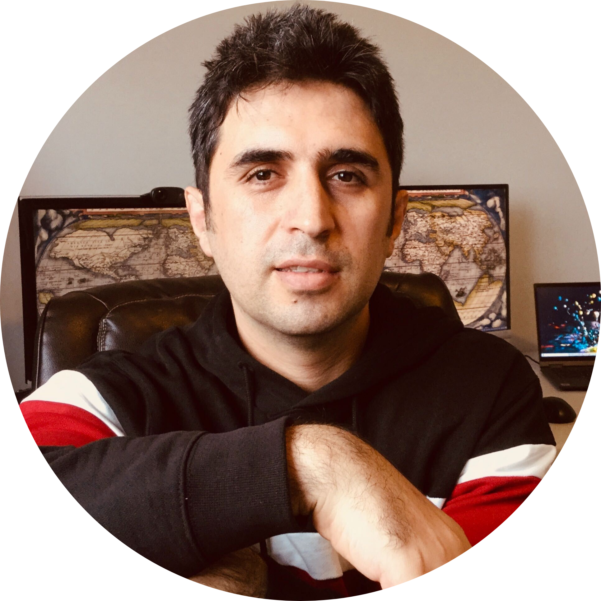

|
Arman Afrasiyabi
arman.afrasiyabi/at/gmail/dot/com
Hello! I am a PhD student at
Université Laval, supervised by Jean-François Lalonde and
Christian Gagné. My research focuses on the investigation of machine learning and deep learning in the context of computer vision. Particularly, I am working in meta-learning and representation learning in the low supervision regimes.
CV /
Google Scholar /
LinkeIn
|

|
|
News
|
Talks
- At ECCV 2020, I prepared a spotlight presentation on our last work “Associative Alignment for Few-shot Image Classification” [video].
- In July 2020, I gave a talk on ”Advances in few-shot learning” at Université Laval, IFT 6501
[slides].
- Université Laval, Intelligence and Data Institute (IID), “Associative Alignment for Few-shot Image” Classification”
[slides].
- In January 2018, I gave a presentation on ”Neural Turing Machines: RNN, NTM and DNC”.
|
|
Publications
|
|
|
Associative Alignment for Few-shot Image Classification.
Arman Afrasiyabi, Jean-François Lalonde, Christian Gagné.
This work got accepted at the European Conference on Computer Vision (ECCV) 2020. Spotlight presentation!
The project's webpage!
|
|
|
Non-Euclidean Vector Product for Neural Networks.
Arman Afrasiyabi, Diaa Badawi, Baris Nasir, Ozan Yildi, Fatios T Yarman Vural, A Enis Çetin.
This work got accepted at International Conference on Acoustics, Speech and Signal Processing (ICASSP) 2018.
|
|
|
An Energy Efficient Additive Neural Network.
Arman Afrasiyabi, Baris Nasir, Ozan Yildiz, Fatos T Yarman Vural, A Enis Cetin.
The 25th Signal Processing and Communications Applications Conference (SIU) 2017.
|
|
|
A sparse temporal mesh model for brain decoding.
Arman Afrasiyabi, Itir Onal, Fatos T Yarman Vural.
This work got accepted and prestented at the 15th International Conference on Cognitive Informatics & Cognitive Computing (ICCI* CC) 2016 hosted by Stanford University.
|
Adopted the template from Nan Rosemary Ke's website!
|
 hide forever |
hide once
hide forever |
hide once